生まれ育った地域から、挑戦が生まれる状態をつくる。
東京への一極集中ではなく、それぞれの地域が自分たちの強みで動き出す。まずは私の地元の名古屋を起点に、東海そして中部地方の発展に寄与する活動を行いたいと考えています。
何かをはじめようとする人が、地域の中から出てくる。
出ていくしかない場所ではなく、生活し続けたい地域、戻ってきたい地域、そして住み続けたい地域に。
生まれた価値を、また次の挑戦に回していく。
AIをはじめとするデジタル技術の社内活用を推進。業務プロセスの自動化・効率化や、新しい技術の業務適用にも幅広く携わっています。
自動運転を研究。ロボットが歩行者を自然に導く「可誘導性」を提案し、制御理論とベイズ推定で評価手法を構築。査読付きジャーナル論文1件を含む計8件を発表しました。
材料・流体・熱・機械の4大力学を軸に、制御工学・電気回路・設計・マイクロナノ・航空機力学・宇宙工学まで、工学を幅広く学びました。
Best Paper Award
人とロボットの相互作用を扱った発表に対して。研究の問いの立て方と定量評価の枠組みを評価いただきました。
返還免除（半額）
大学院での研究業績が認められ、貸与奨学金の半額について返還を免除いただきました。
and Mechatronics
Vol.37 No.6 (2025) 2025.1ミュンヘン国際 SII 2025 — IEEE/SICE Int. Symposium on System Integration発表「Inducibility Analysis of Pedestrian's Interactive Behavior」。ロボットの動きが周囲の歩行者の行動をどれだけ誘導できるかを定量評価しました。 IEEE Xplore
SII 2025 Proceedings 2024.11富山国内・受賞 SSI2024 — 計測自動制御学会 システム・情報部門 学術講演会発表「可誘導性：歩行者間インタラクションにおける判断感度と可制御性に基づいた評価」。SSI最優秀論文賞（Best Paper Award）を受賞しました。 SSI最優秀論文賞
Best Paper Award 2024.6宇都宮国内 ROBOMEC 2024 — ロボティクス・メカトロニクス講演会移動ロボットと歩行者のインタラクションに関する研究を発表。奥田裕之 教授・鈴木達也 教授との共同研究です。 日本機械学会
ロボメカ部門 2024.5横浜国内・ポスター JSAE 2024年春季大会 — 行動モデルに基づく歩行者間の相互影響度定量化指標の提案第7回学生ポスターセッション（発表番号66）に登壇。歩行者の行動モデルをもとに、歩行者どうしが与え合う影響の大きさを定量化する指標を提案しました。 自動車技術会
第7回学生
ポスターセッション 2023.11ローマ国際 ICINCO 2023 — Int. Conf. on Informatics in Control, Automation and Robotics発表「Evaluation of Controllability of Interaction Between Pedestrian and Autonomous Mobile Robot in Shared Mobility Space」。歩行者の判断をロジスティック回帰でモデル化し、ロボットの「暗黙的な制御」を評価しました。 SciTePress
ICINCO 2023 Proceedings 2023.10仙台国内・査読付き 第66回自動制御連合講演会 — 共有移動空間における移動ロボットによる歩行者行動の可制御性評価青木瑞穂・奥田裕之 教授・鈴木達也 教授との共同研究。移動ロボットが歩行者の行動をどこまで動かせるかを可制御性の観点から評価し、査読付き論文として J-STAGE に掲載されました。 J-STAGE
自動制御連合講演会
講演論文集 2023.6名古屋国内 ROBOMEC 2023 — ロボティクス・メカトロニクス講演会すれ違い時の歩行者の動きを、ベイズ推定とロジスティック回帰で数理モデル化した結果を報告。 日本機械学会
ロボメカ部門
移動ロボットを用いて、周囲の歩行者を特定の行動へ自然に誘導する技術。研究で提案した「可誘導性」の考え方を、企業と大学の共同で出願しました。
これまでの
活動内容。
人でいっぱいの街で、
ロボットはどう動くべきか。
HOW SHOULD ROBOTS MOVE AMONG PEOPLE?
トヨタ自動車との共同研究として取り組んだテーマです。目指したのは、すれ違う人に思いやりのあるロボットの行動。避けるだけでも、待つだけでもない行動計画について研究しました。
配送ロボットや車いす型の自律移動。技術は「移動できる」段階まで来ました。けれど人の中では、止まりすぎても強引すぎても受け入れられません。必要なのは、相手を思いやれる行動でした。
避けているのはロボットだけではありません。人も相手の動きを読んで進路を変えています。そこで「ロボットの動きが人をどう変えるか」まで含めて経路計画を立てるべきではないかと考えました。
ロボットと人は、
常にインタラクションしている。
人同士のすれ違いでは、どちらかが先に少し進路を変え、相手をそっとナッジしています。押しつけるのでなく、相手を誘導するようにナッジすることで、インタラクションは円滑になっているのではないかと考えました。そこでロボットの経路計画にも相手の行動をナッジする動きを取り入れることで、自然な動きになるのではないかと仮説を立てました。
そこで、ロボットの振る舞いが人の行動をどれだけ誘導できるかを「可誘導性」と定義し、制御理論とベイズ推定の枠組みで定量化しました。目の前の人を誘導できるなら能動的に、できないなら相手の動きに合わせて。同じ場面でも、取るべき振る舞いを切り替えられるようになります。
メインに実施したのは、ロボットと人が正面から近づくすれ違い実験です。ロボットの振る舞いごとに、人の経路がどう変わるかのデータを取得しました。
SSI最優秀論文賞
Best Paper Award
SII 2025
研究助成 採択
人が中心にいる街の中を、
ロボットが自然に動く。
性能ではなく、人がどう感じるかまで含めて設計する。
構想が形になりしだい、取り組みの内容を追加していきます。
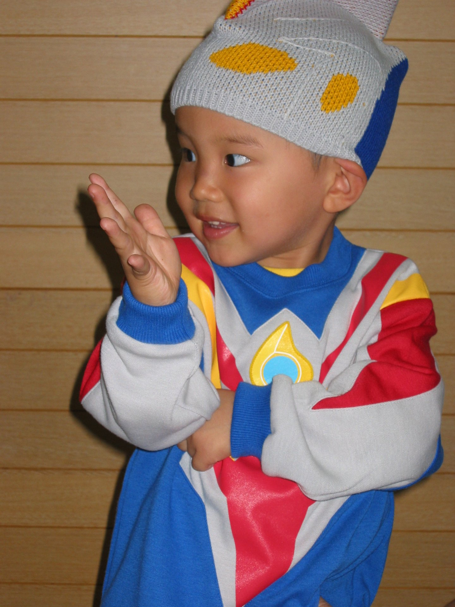
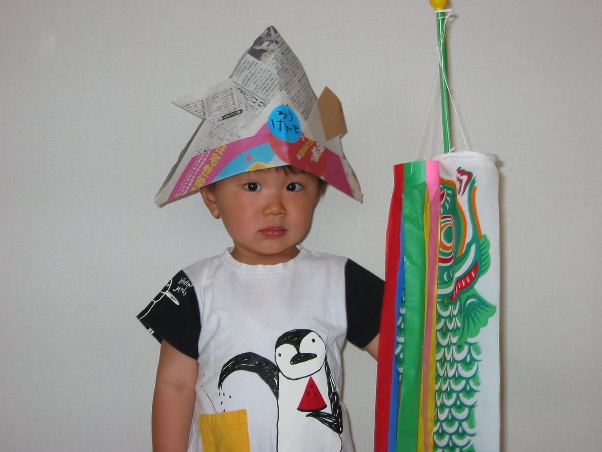
愛知県一宮市で生まれ育つ。
図鑑と発掘のテレビ番組に夢中で、将来の夢は恐竜学者か考古学者。「まだ誰も知らないものを掘り当てたい」という気持ちが、いちばん最初にあったものでした。
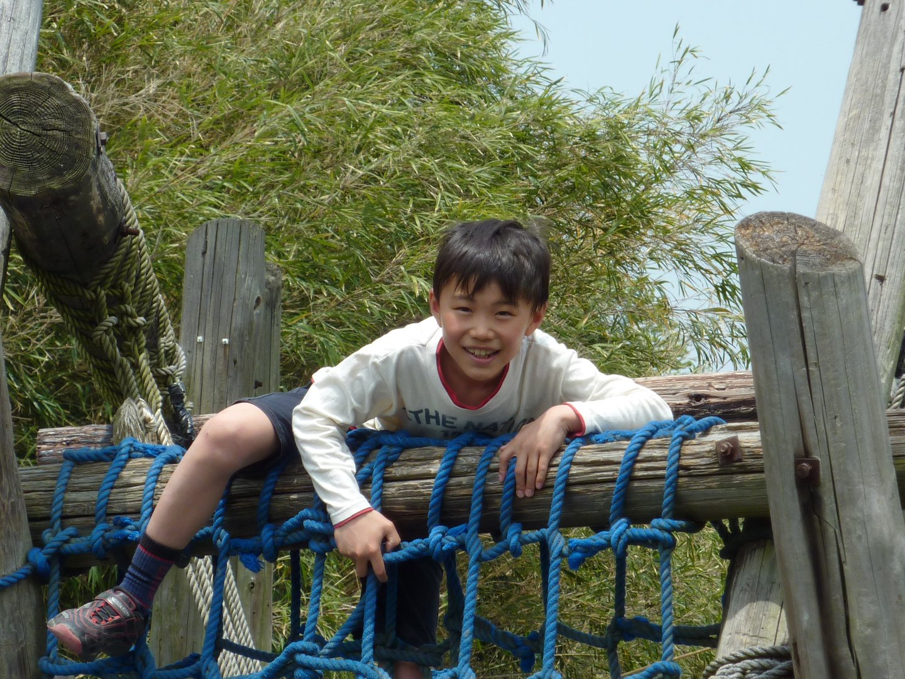
友達と毎日のように公園でサッカーや野球をして体を動かしていました。小学生になっても、歴史的なものが好きで伝承遊びクラブや百人一首クラブへ所属していました。
新しいことに挑戦することの楽しさを学んだ3年間でした。
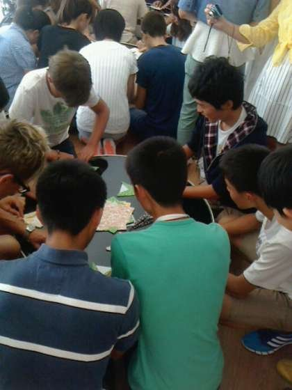
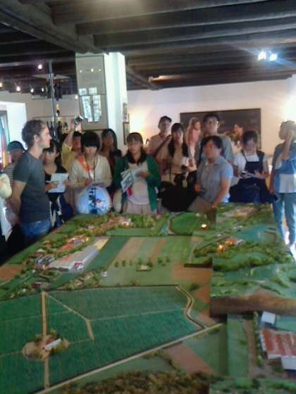
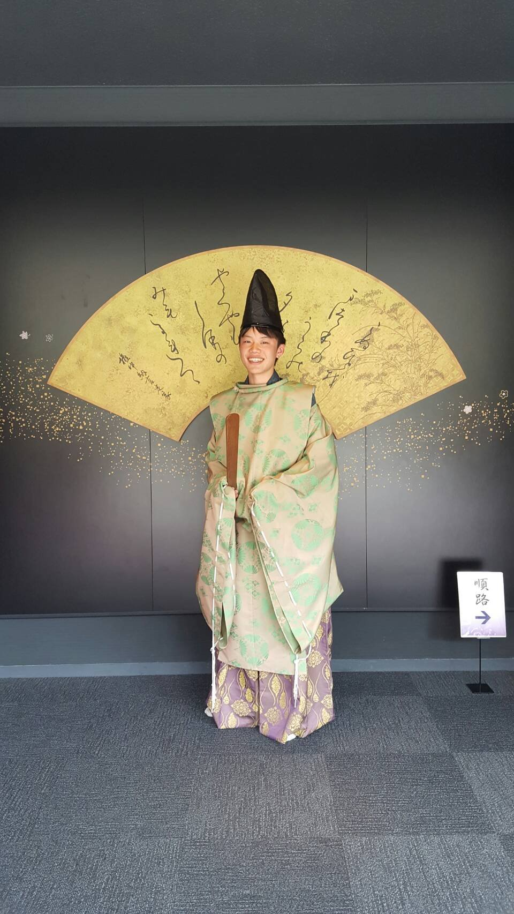
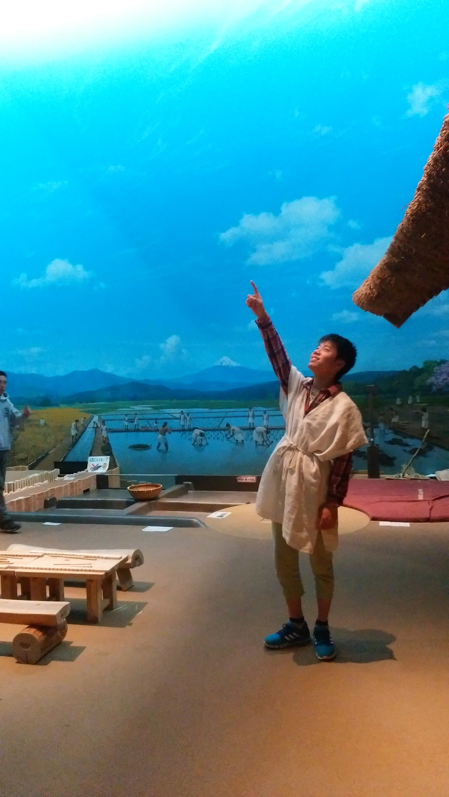
できないことを選んで挑戦した3年間。手を動かしてつくる楽しさも知りました。
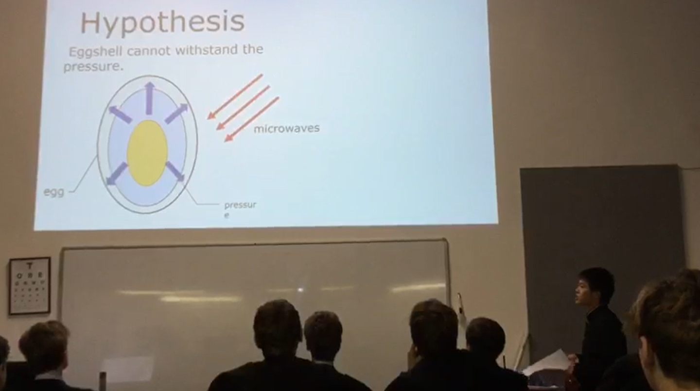
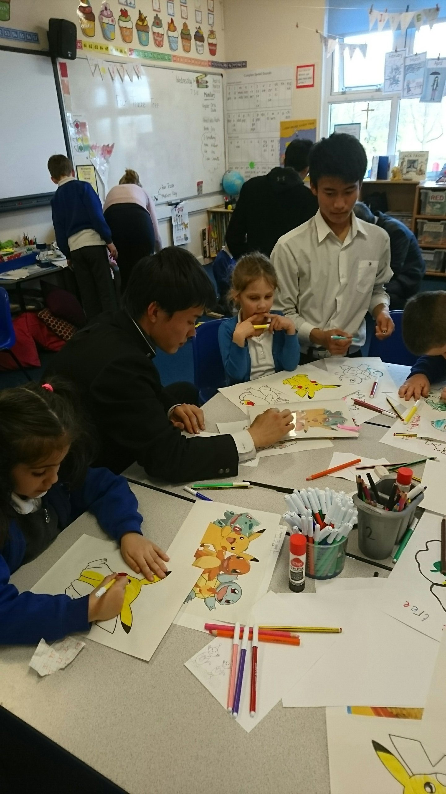
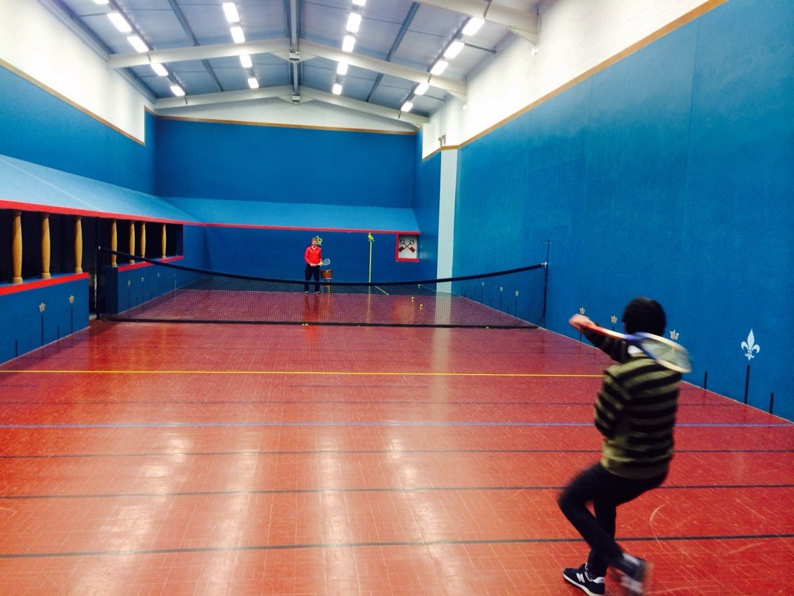
1年間かけた研究「電子レンジにおける卵の爆発メカニズム」を英語で発表。加熱時に卵が爆発する仕組みと、どうすれば防げるかまで実験で確かめた研究でした。研究をすることの目的や so what を考えきることができず、研究の難しさを学ぶことができました。
授業は質疑応答が中心で、生物ではカメレオンを飼育し体育ではカヌー。体験に価値を置く教育と、学生が主体的に発言する空気感にカルチャーショックを受けました。
材料・流体・熱・機械の4大力学を軸に、制御工学・電気回路・設計・マイクロナノ・航空機力学・宇宙工学まで、工学を幅広く学びました。
自動運転を研究。ロボットが歩行者を自然に導く「可誘導性」を提案し、制御理論とベイズ推定で評価手法を構築。査読付きジャーナル論文1件を含む計8件を発表しました。
AIをはじめとするデジタル技術の社内活用を推進。業務プロセスの自動化・効率化や、新しい技術の業務適用にも幅広く携わっています。
大学に入ってしばらくは、成績を上げることが努力だと思っていました。実際に成績は取れていたし、それで前に進めている感覚もありました。
けれど、研究室に配属後、圧倒的に優秀な先輩たちに出会って、その考えが崩れます。時間をかけても、量を増やしても、埋まらない差がある。努力している量の問題ではないと分かってしまった時期でした。
差は量ではなく、起点でした。彼らは「どう評価されるか」ではなく「どんな未来をつくりたいか」から考えていた。出発点が違えば、選ぶ問いも、続ける理由も変わります。
評価から逆算して、やることを決める。
目標から逆算して、やることを決める。
何をするかではなく、
なぜそれをするのか。
テーマ選びも、仕事の進め方も、目的から。
自分の中だけで考えても、起点は変わらない。
いま「地域創生」を目標にしているのも、この延長です。
生まれ育った地域から、挑戦が生まれる状態をつくる。
東京への一極集中ではなく、それぞれの地域が自分たちの強みで動き出す。まずは地元の名古屋を起点に、東海・中部の発展に寄与する活動をしたいと考えています。
何かをはじめようとする人が、地域の中から出てくる。
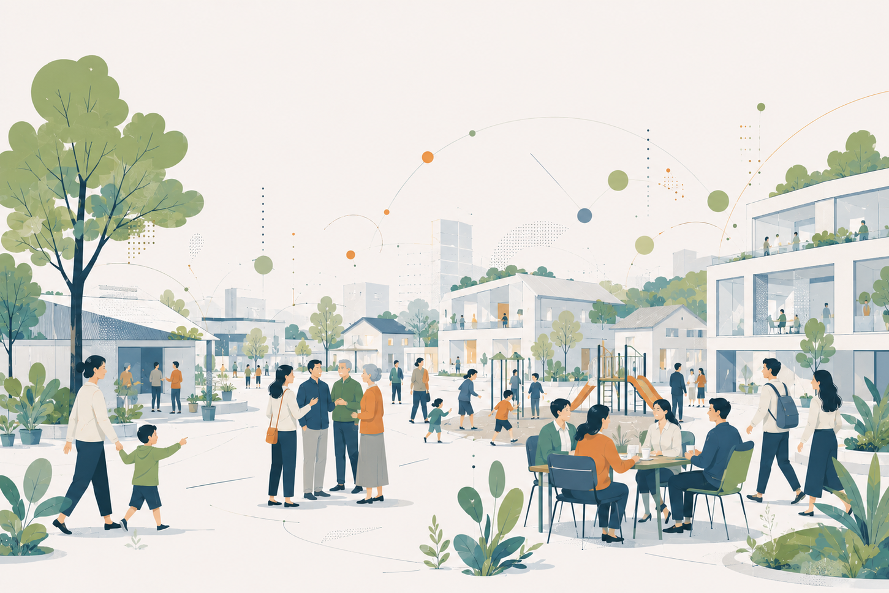
出ていくしかない場所ではなく、生活し続けたい地域、戻ってきたい地域、そして住み続けたい地域に。
生まれた価値を、また次の挑戦に回していく。
進学や就職のたびに、人は東京へ向かいます。選択肢が一箇所に集まるほど、地域からは挑戦する理由が減っていく。地元に戻る選択が「妥協」に見えてしまう状態を、変えたいと思っています。
教育から始まり、まちづくりを経て、また教育に戻ってくる循環。
江戸時代は、各藩がそれぞれの産業と文化を育てていました。中心が一つではなかったからこそ、地域ごとに個性が残った。同じ構造を、いまの技術とやり方で作り直せないかと考えています。
日本全体を語る前に、自分が一番よく知っている場所から。産業の集積があり、大学があり、人もいる。名古屋・東海は、試すには十分な条件がそろっていると思っています。
ロードマップを見る構想が形になりしだい、道筋の内容を追加していきます。
.JPG)
.jpg)
.jpg)
.jpg)
.jpg)
地元・名古屋のチームです。小学生の頃、アニメ「メジャー」の映画を見てから野球のファンになり、中日ドラゴンズのファンになりました。
最近は優勝・日本一できていませんが、今年こそは優勝目指して応援したいと思います。
球場内は日本の「球場」とは異なり「Ball Park」としての作りこみがされていて、野球をあまり知らない人でも十分に1日楽しめる工夫がされていたことに感銘を受けました。また球場に着くまでの高揚感まで含めて「体験の設計」がうまいと感じました。
現地で大谷翔平選手の45-45のホームランを見ました！まだ投手・大谷翔平の試合を見たことが一度もないので、ぜひ見に行きたいです。
日本のスポーツ観戦でも、こんな形で地域の人が一つになれる「場」づくりがもっとできるとよいなと感じました。
.jpg)
.jpg)
ドラゴンズ戦は小学生の頃から100試合以上観戦に行っているので、割愛させていただきます。
6回裏に大谷翔平の45号ソロ、そしてシーズン100打点目。試合はガーディアンズが3-1で勝利しました。
初回に打線が一挙6得点。4回裏にはベッツの本塁打も飛び出し、7-2で快勝しました。
WBC前の強化試合、侍ジャパンシリーズ第2戦。5回に侍ジャパンが一挙5得点で突き放し、7-3で連勝しました。
佐々木朗希が5回4失点ながら勝ち投手。4回裏の一挙6得点で試合が決まりました。カブスの鈴木誠也は4打数3安打1本塁打。